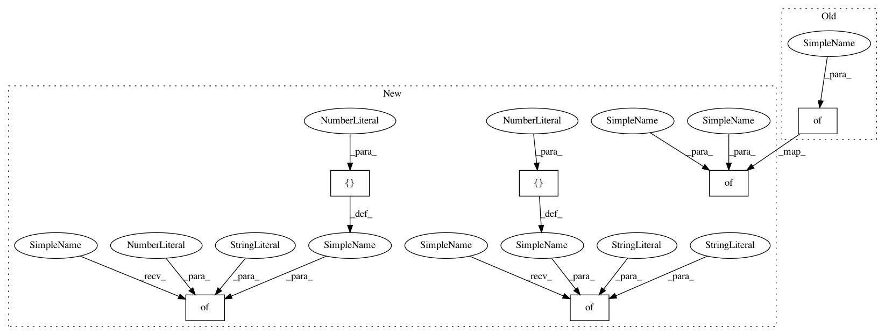

86cff17e7ef1b355e1ab4862ccd664ed4c856227,python/ray/util/sgd/torch/examples/cifar_pytorch_example.py,,tune_example,#,103
Before Change
"num_workers": num_workers,
"initialization_hook": initialization_hook,
"use_gpu": use_gpu,
"config": {
"lr": tune.choice([1e-4, 1e-3]),
BATCH_SIZE: 128,
"test_mode": test_mode
},
"backend": "nccl" if use_gpu else "gloo"
}
After Change
scheduler_creator=scheduler_creator,
initialization_hook=initialization_hook,
num_workers=num_workers,
config={
"test_mode": test_mode, // user-defined param to subset the data
BATCH_SIZE: 128 * num_workers,
},
use_gpu=use_gpu,
scheduler_step_freq="epoch",
use_fp16=use_fp16)
pbt_scheduler = PopulationBasedTraining(
time_attr="training_iteration",
metric="val_loss",
mode="min",
perturbation_interval=1,
hyperparam_mutations={
// distribution for resampling
"lr": lambda: np.random.uniform(0.001, 1),
// allow perturbations within this set of categorical values
"momentum": [0.8, 0.9, 0.99],
})
reporter = CLIReporter()
reporter.add_metric_column("val_loss", "loss")
reporter.add_metric_column("val_accuracy", "acc")
analysis = tune.run(
TorchTrainable,
num_samples=4,
config={
"lr": tune.choice([0.001, 0.01, 0.1]),
"momentum": 0.8
},
stop={"training_iteration": 2 if test_mode else 100},
max_failures=3, // used for fault tolerance
checkpoint_freq=3, // used for fault tolerance
In pattern: SUPERPATTERN
Frequency: 3
Non-data size: 6
Instances
Project Name: ray-project/ray
Commit Name: 86cff17e7ef1b355e1ab4862ccd664ed4c856227
Time: 2020-03-30
Author: rliaw@berkeley.edu
File Name: python/ray/util/sgd/torch/examples/cifar_pytorch_example.py
Class Name:
Method Name: tune_example
Project Name: NVIDIA/OpenSeq2Seq
Commit Name: 67842cd162a98fcd1e469dcb0f1528de56d9f956
Time: 2018-08-17
Author: xravitejax@gmail.com
File Name: example_configs/speech2text/w2l_large_8gpus_mp.py
Class Name:
Method Name:
Project Name: NVIDIA/OpenSeq2Seq
Commit Name: 67842cd162a98fcd1e469dcb0f1528de56d9f956
Time: 2018-08-17
Author: xravitejax@gmail.com
File Name: example_configs/speech2text/w2l_large_8gpus.py
Class Name:
Method Name: